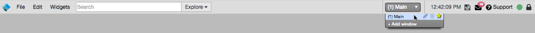

Workspace Display
You can customize the look of your workspace through the Preferences.
From the Edit menu, select Preferences.

Note: Any changes you make will affect the current workspace as well as all other workspaces you have created.
Workspaces consist of a single window or collection of windows which can be toggled between using keyboard shortcuts or by using the drop down menu located in the top menu bar. Each window of a workspace can be populated with its own combination of widgets.
Each workspace begins with a single default window, named Main, but you can create additional windows within a workspace for more working area or to use separate windows for distinct purposes.

Each window is viewed individually within the workspace, and you can easily switch between the windows. You can use multiple windows within a workspace to:
You can also also send widgets from one window to another.
You can customize the look of your workspace through the Preferences.
From the Edit menu, select Preferences.
Note: Any changes you make will affect the current workspace as well as all other workspaces you have created.